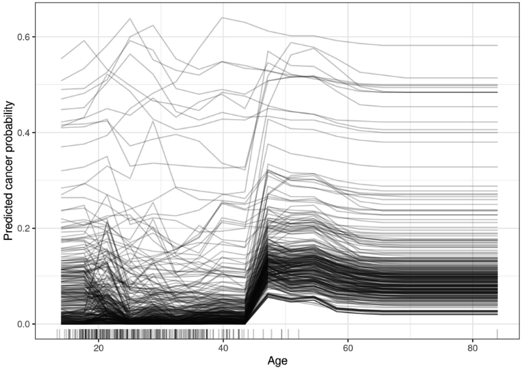
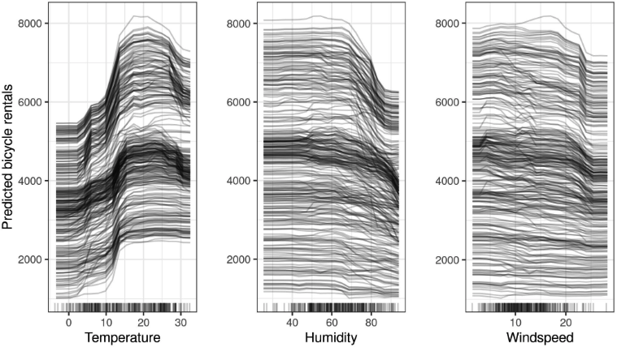
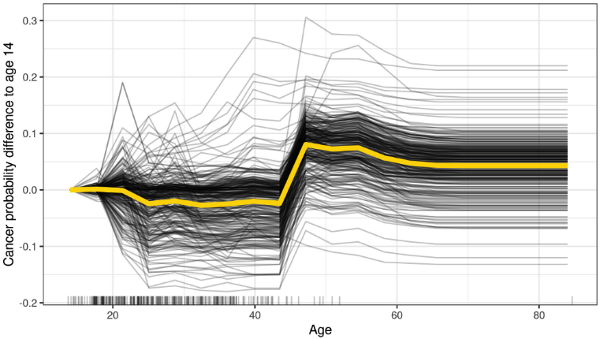
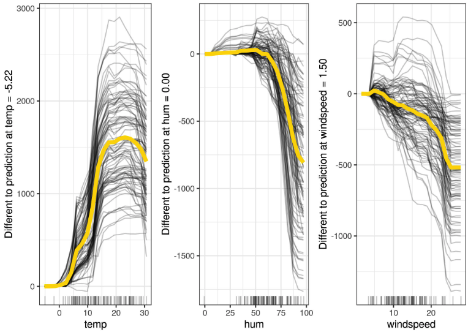

9.1 - Attente Conditionnelle Individuelle (Individual Conditional Expectation - ICE)
Les tracés ICE (Individual Conditional Expectation) affichent une ligne par instance qui montre comment la prédiction de l’instance change lorsqu’une fonctionnalité change.
Le diagramme de dépendance partielle pour l’effet moyen d’une caractéristique est une méthode globale car elle ne se concentre pas sur des instances spécifiques, mais sur une moyenne globale. L’équivalent d’un PDP pour les instances de données individuelles est appelé tracé des attentes conditionnelles individuelles (ICE) (Goldstein et al. 2017)1. Un tracé ICE visualise la dépendance de la prédiction sur une caractéristique pour chaque instance séparément, ce qui donne une ligne par instance, contre une ligne globale dans les tracés de dépendance partielle. Un PDP est la moyenne des lignes d’un tracé ICE. Les valeurs d’une ligne (et d’une instance) peuvent être calculées en conservant toutes les autres entités identiques, en créant des variantes de cette instance en remplaçant la valeur de l’entité par les valeurs d’une grille et en effectuant des prédictions avec le modèle de boîte noire pour ces instances nouvellement créées. Le résultat est un ensemble de points pour une instance avec la valeur de caractéristique de la grille et les prédictions respectives.
Quel est l’intérêt de s’intéresser aux attentes individuelles plutôt qu’aux dépendances partielles ? Les diagrammes de dépendance partielle peuvent masquer une relation hétérogène créée par les interactions. Les PDP peuvent vous montrer à quoi ressemble la relation moyenne entre une fonctionnalité et la prédiction. Cela ne fonctionne bien que si les interactions entre les fonctionnalités pour lesquelles le PDP est calculé et les autres fonctionnalités sont faibles. En cas d’interactions, le tracé ICE fournira beaucoup plus d’informations.
Une définition plus formelle : dans les tracés ICE, pour chaque instance de \(\{(x_{S}^{(i)},x_{C}^{(i)})\}_{i=1}^N\) la courbe \(\hat{f}_S^{(i)}\) est comploté contre \(x^{(i)}_{S}\), alors que \(x^{(i)}_{C}\) reste fixe.
9.1.1 - Exemples
Revenons à l’ensemble de données sur le cancer du col de l’utérus et voyons comment la prédiction de chaque instance est associée à la fonctionnalité « Âge ». Nous analyserons une forêt aléatoire qui prédit la probabilité de cancer pour une femme compte tenu des facteurs de risque. Dans le graphique de dépendance partielle, nous avons vu que la probabilité de cancer augmente vers l’âge de 50 ans, mais est-ce vrai pour chaque femme de l’ensemble de données ? Le graphique ICE révèle que pour la plupart des femmes, l’effet de l’âge suit la tendance moyenne d’augmentation à 50 ans, à quelques exceptions près : pour les quelques femmes qui ont une probabilité prédite élevée à un jeune âge, la probabilité prédite de cancer ne change pas. beaucoup avec l’âge.

La figure suivante montre les tracés ICE pour la prévision de la location de vélos. Le modèle de prédiction sous-jacent est une forêt aléatoire.

Toutes les courbes semblent suivre le même parcours, il n’y a donc pas d’interactions évidentes. Cela signifie que le PDP est déjà un bon résumé des relations entre les caractéristiques affichées et le nombre prévu de vélos.
9.1.1.1 - Tracé ICE centré
Il y a un problème avec les tracés ICE : il peut parfois être difficile de déterminer si les courbes ICE diffèrent d’un individu à l’autre, car elles partent de prédictions différentes. Une solution simple consiste à centrer les courbes en un certain point de l’entité et à afficher uniquement la différence de prédiction jusqu’à ce point. Le tracé résultant est appelé tracé ICE centré (c-ICE). Ancrer les courbes à l’extrémité inférieure de l’entité est un bon choix. Les nouvelles courbes sont définies comme :
\[\hat{f}_{cent}^{(i)}=\hat{f}^{(i)}-\mathbf{1}\hat{f}(x^{a},x^{(i)}_{C})\]
où \(\mathbf{1}\) est un vecteur de 1 avec le nombre approprié de dimensions (généralement une ou deux), \(\hat{f}\) est le modèle ajusté et \(x^a\) est le point d’ancrage.
9.1.1.2 - Exemple
Par exemple, prenons le tracé ICE du cancer du col de l’utérus pour l’âge et centrez les lignes sur l’âge observé le plus jeune :

Les tracés ICE centrés facilitent la comparaison des courbes d’instances individuelles. Cela peut être utile si nous ne voulons pas voir le changement absolu d’une valeur prédite, mais la différence dans la prédiction par rapport à un point fixe de la plage de caractéristiques.
Jetons un coup d’œil aux tracés ICE centrés pour la prédiction de la location de vélos :

9.1.1.3 - Graphique ICE dérivé
Une autre façon de faciliter visuellement la détection de l’hétérogénéité consiste à examiner les dérivées individuelles de la fonction de prédiction par rapport à une caractéristique. Le tracé résultant est appelé tracé ICE dérivé (d-ICE). Les dérivées d’une fonction (ou d’une courbe) vous indiquent si des changements se produisent et dans quelle direction ils se produisent. Avec le tracé ICE dérivé, il est facile de repérer les plages de valeurs de caractéristiques où les prédictions de la boîte noire changent pour (au moins certaines) instances. S’il n’y a pas d’interaction entre la fonctionnalité analysée \(x_S\) et les autres fonctionnalités \(x_C\), alors la fonction de prédiction peut être exprimée comme suit :
\[\hat{f}(x)=\hat{f}(x_S,x_C)=g(x_S)+h(x_C),\quad\text{with}\quad\frac{\delta\hat{f}(x)}{\delta{}x_S}=g'(x_S)\]
Sans interactions, les dérivées partielles individuelles devraient être les mêmes pour toutes les instances. S’ils diffèrent, cela est dû à des interactions et cela devient visible sur le tracé d-ICE. En plus d’afficher les courbes individuelles de la dérivée de la fonction de prédiction par rapport à la caractéristique dans \(S\), l’affichage de l’écart type de la dérivée permet de mettre en évidence les régions de la caractéristique dans \(S\) présentant une hétérogénéité dans les dérivées estimées. Le tracé ICE dérivé prend beaucoup de temps à calculer et est plutôt peu pratique.
9.1.2 - Avantages
Les courbes d’espérances conditionnelles individuelles sont encore plus intuitives à comprendre que les diagrammes de dépendance partielle. Une ligne représente les prédictions pour une instance si nous faisons varier la caractéristique d’intérêt.
Contrairement aux diagrammes de dépendance partielle, les courbes ICE peuvent révéler des relations hétérogènes.
9.1.3 - Inconvénients
Les courbes ICE ne peuvent afficher qu’une seule entité de manière significative, car deux entités nécessiteraient le dessin de plusieurs surfaces superposées et vous ne verriez rien dans le tracé.
Les courbes ICE souffrent du même problème que les PDP : si la caractéristique d’intérêt est corrélée aux autres caractéristiques, alors certains points des lignes peuvent être des points de données invalides selon la distribution commune des caractéristiques.
Si de nombreuses courbes ICE sont tracées, le tracé peut devenir surpeuplé et vous ne verrez rien. La solution : soit ajoutez un peu de transparence aux lignes, soit dessinez uniquement un échantillon des lignes.
Dans les graphiques ICE, il n’est peut-être pas facile de voir la moyenne. Il existe une solution simple : combiner les courbes d’espérances conditionnelles individuelles avec le tracé de dépendance partielle.
9.1.4 - Logiciels et alternatives
Les tracés ICE sont implémentés dans les packages R iml (utilisés pour ces exemples), ICEbox2 et pdp. Un autre package R qui fait quelque chose de très similaire à ICE est condvis. En Python, les tracés de dépendance partielle sont intégrés à scikit-learn à partir de la version 0.24.0.
Notes de bas de page
Goldstein, Alex, Adam Kapelner, Justin Bleich, and Emil Pitkin. “Peeking inside the black box: Visualizing statistical learning with plots of individual conditional expectation.” journal of Computational and Graphical Statistics 24, no. 1 (2015): 44-65.↩︎
Goldstein, Alex, Adam Kapelner, Justin Bleich, and Maintainer Adam Kapelner. “Package ‘ICEbox’.” (2017).↩︎